START HERE / THE BIG IDEA
France mein har shehar ki apni pehchaan haiEvery French city has its own special storyChaque ville française a son histoire
Socho tum France ghoomne ja rahe ho. Paris mein famous monuments dekh sakte ho, Lyon mein tasty food try kar sakte ho, aur Nice mein beaches enjoy kar sakte ho. Har city ki apni alag story hai.
France mein log cities ke beech trains se aur cities ke andar metro, bus, tram ya bike se travel kar sakte hain. Chapter ka main idea hai: kaunsi city kis baat ke liye famous hai, aur kaunsa transport kahan kaam aata hai.
Imagine that you are visiting France. You could see famous monuments in Paris, try tasty food in Lyon, and enjoy beaches in Nice. Each city has its own story.
People in France can travel between cities by train, and around a city by metro, bus, tram, or bicycle. The main idea is to learn what each city is known for and which kind of transport is useful where.
Imagine que tu visites la France. Tu peux voir les monuments de Paris, goûter la cuisine de Lyon et profiter des plages de Nice. Chaque ville a son histoire.
En France, on peut voyager entre les villes en train. En ville, on peut prendre le métro, le bus ou le tram, ou utiliser un vélo. Il faut retenir ce qui rend chaque ville célèbre et quel transport choisir.
Shehar ki pehchaan yaad rakho, aur journey ke hisaab se transport chuno.
Remember what makes each city special, and choose transport to suit the journey.
Retiens ce qui rend chaque ville spéciale et choisis le transport adapté au voyage.
01 / CITY TOUR
Aath French shehar, aath khaas baateinEight French cities, eight special thingsHuit villes françaises et leurs spécialités
City ka naam padho aur uske saath judi hui ek main baat yaad rakho. Isse matching aur short-answer questions easy ho jayenge.
Read each city’s name and remember one important thing connected to it. This will make matching and short-answer questions easier.
Lis le nom de chaque ville et retiens une chose importante à son sujet. Cela t’aidera pour les exercices et les réponses courtes.
Paris
France ki capital aur sabse bada shehar. Fashion, art, culture aur Eiffel Tower, Louvre aur Notre-Dame jaise monuments ke liye famous.
The capital and largest city of France. It is famous for fashion, art, culture, and monuments such as the Eiffel Tower, the Louvre, and Notre-Dame Cathedral.
French to writeParis est la capitale et la plus grande ville de France. Elle est célèbre pour la mode, l’art, la culture et ses monuments : la tour Eiffel, le Louvre et Notre-Dame.
Marseille
France ka doosra sabse bada shehar, south mein Mediterranean Sea ke paas. Iska purana Vieux-Port seafood restaurants aur street artists ke liye jaana jaata hai.
The second-largest city in France, in the south near the Mediterranean Sea. Its old Vieux-Port is known for seafood restaurants and street artists.
French to writeMarseille est la deuxième plus grande ville de France. Elle se trouve dans le sud, au bord de la Méditerranée. Le Vieux-Port est célèbre pour ses restaurants de fruits de mer et ses artistes de rue.
Lyon
France ka teesra sabse bada shehar. Iska delicious khana, sundar architecture aur purani history famous hai.
The third-largest city in France. It is known for delicious food, beautiful architecture, and a long history.
French to writeLyon est la troisième plus grande ville de France. Elle est connue pour sa cuisine délicieuse, sa belle architecture et son histoire.
Toulouse
South-west France ka shehar. Ise la Ville Rose, yaani “Pink City,” kehte hain kyunki yahan bahut si buildings pink bricks se bani hain. Aerospace aur technology bhi yahan important hain.
A city in south-west France. It is called la Ville Rose, or “the Pink City,” because many buildings are made of pink bricks. Aerospace and technology are also important there.
French to writeToulouse se trouve dans le sud-ouest de la France. On l’appelle la Ville Rose à cause de ses bâtiments en briques. L’aérospatiale et la technologie y sont importantes.
Nice
Côte d’Azur par ek popular holiday city, jahan Mediterranean climate pleasant hota hai. Beaches, art galleries aur purana Vieux-Nice iski khaas baatein hain.
A popular holiday city on the French Riviera, with a pleasant Mediterranean climate. Its beaches, art galleries, and old quarter, Vieux-Nice, are special features.
French to writeNice est une destination de vacances populaire sur la Côte d’Azur. Son climat méditerranéen est agréable. Elle est célèbre pour ses plages, ses galeries d’art et le Vieux-Nice.
Strasbourg
France ke north-east mein hai. Iska historic centre aur Christmas markets famous hain; European Parliament ka seat bhi yahin hai.
In north-east France, Strasbourg is known for its historic centre and Christmas markets. It is also the seat of the European Parliament.
French to writeStrasbourg se trouve dans le nord-est de la France. Elle est connue pour son centre historique, ses marchés de Noël et le siège du Parlement européen.
Bordeaux
South-west France ka shehar, jo apne wines, khoobsurat purani buildings aur duniya bhar mein important city centre ke liye jaana jaata hai.
A city in south-west France, known for its wines, beautiful old buildings, and a city centre described as important around the world.
French to writeBordeaux se trouve dans le sud-ouest de la France. La ville est connue pour ses vins délicieux et ses beaux bâtiments anciens. Son centre-ville est très important pour le monde entier.
Lille
North France mein hai. Flemish-style architecture, Christmas market, business aur education ke liye jaana jaata hai.
In northern France, Lille is known for Flemish-style architecture, its Christmas market, business, and education.
French to writeLille se trouve dans le nord de la France. Elle est connue pour son architecture flamande et son marché de Noël. Les affaires et l’éducation y sont importantes.
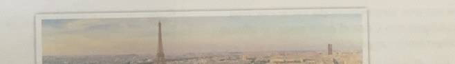
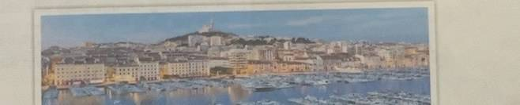
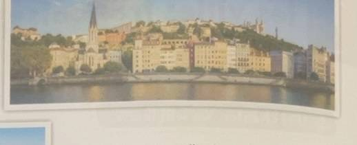
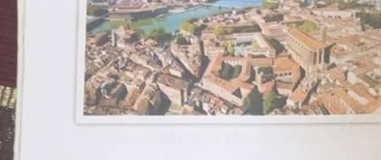
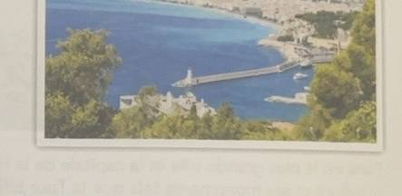
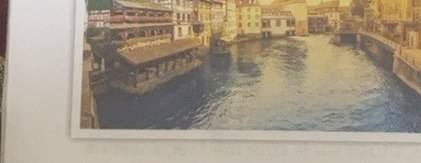
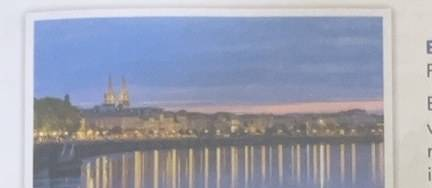
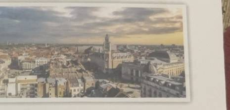
02 / VOCABULAIRE
Chapter ke useful wordsUseful words from the chapter
French word ko pehchaano, phir meaning padho. French spelling ko waise hi yaad rakho—accents, jaise é aur è, bhi word ka hissa hain.
Recognise the French word, then read its meaning. Keep the French spelling as it is—accent marks such as é and è are part of the word.
Lis le mot français et son sens. Garde bien les accents, comme é et è : ils font partie du mot.
Des villes / Cities
| French | Meaning |
|---|---|
| célèbre | famous / mashhoorfamous |
| la mode | fashion / fashion ki duniyafashion |
| tels que | such as / jaise kisuch as |
| située | located / sthitlocated |
| le quartier | neighbourhood / ilaakaneighbourhood |
| les fruits de mer | seafood / samundari khanaseafood |
| les artistes de rue | street artists / sadak par kala dikhane wale kalakaarstreet artists |
| talentueux / talentueuse | talented / hunarmandtalented |
| connue | known / jaani huiknown |
| magnifique | beautiful / bahut sundarbeautiful; magnificent |
| illustre | famous / prasiddhfamous; well-known |
| la Ville Rose | Pink City / gulaabi sheharPink City |
| les bâtiments | buildings / imaarateinbuildings |
| les briques | bricks / eenteinbricks |
| l’aérospatiale | aerospace / hawaai aur space technologyaerospace |
| la Côte d’Azur | French Riviera / France ka Mediterranean coastthe French Riviera |
| agréable | pleasant / achha aur sukhadpleasant |
| charmant | charming / dilkashcharming |
| les marchés de Noël | Christmas markets / Christmas ke bazaarChristmas markets |
| le siège | seat or headquarters / mukhya sthaanseat; headquarters |
| le centre-ville | city centre / shehar ka beech wala hissacity centre |
| flamande | Flemish / Flanders ilaake se judiFlemish; from Flanders |
| le centre d’affaires | business centre / kaarobaar ka kendrabusiness centre |
Les transports / Transport
| French | Meaning |
|---|---|
| les moyens de transport | ways of travelling / safar ke saadhanmeans of transport |
| relier | to connect / jodnato connect |
| le TGV (Train à Grande Vitesse) | high-speed train / bahut tez trainhigh-speed train |
| les Trains Régionaux (TER) | regional trains / ilaakon ke beech chalne wali trainsregional trains |
| le train Intercités | intercity train / shehron ke beech chalne wali trainintercity train |
| le RER (Réseau Express Régional) | regional express network / Paris aur uske suburbs ko jodne wali train serviceregional express network linking Paris and its suburbs |
| rapide / très rapide | fast / very fast — tez / bahut tezfast; very fast |
| la distance | distance / dooridistance |
| les arrêts | stops / rukne ki jagahenstops |
| plus cher / moins cher | more expensive / cheaper — zyada mehenga / sastamore expensive; cheaper |
| la durée du voyage | journey time / safar ka samayjourney duration |
| environ | about / lagbhagabout; approximately |
| connecter | to connect / jodnato connect |
| les banlieues | suburbs / shehar ke baahar ke ilaakesuburbs |
| les sites touristiques | tourist places / ghoomne ki mashhoor jagahentourist sites |
| le métro | metro / shehar ke andar chalne wali trainmetro; city underground train |
| souterrain | underground / zameen ke neecheunderground |
| les bus | buses / busbuses |
| pratique | practical / kaam ka aur aasaanpractical |
| économique | economical / kam kharch walaeconomical |
| les trajets urbains | city journeys / shehar ke andar ke safarurban journeys |
| les tramways | trams / sadak par rail ki patriyon par chalne wali gaaditrams |
| efficace | efficient / achhe se kaam karne walaefficient |
| les taxis | taxis / taxitaxis |
| disponible | available / milne ke liye taiyaaravailable |
| les voitures | cars / gaadiyancars |
| les régions rurales | countryside regions / gaon aur dehaat ke ilaakerural regions |
| les vélos | bicycles / cyclebicycles |
| surtout | especially / khaas taur parespecially |
| les pistes cyclables | cycle paths / cycle chalane ke raastecycle paths |
| le prix | price / daamprice |
| recommandé | recommended / salah di gayirecommended |
| réserver | to book / pehle se jagah ya ticket lenato book; reserve |
| les billets | tickets / ticketstickets |
| à l’avance | in advance / pehle sein advance |
| obtenir | to get / paanato get; obtain |
| meilleur | best / sabse achhabest |
| en ligne | online / internet paronline |
03 / GETTING AROUND
Kaunsa transport kahan jaata hai?Which transport goes where?Quel transport utiliser ?
Har transport ka apna use hai. Bade shehar ke andar aur do door ke shehron ke beech ka safar alag ho sakta hai.
Each type of transport has its own use. A trip inside a large city can be different from a journey between two faraway cities.
Chaque moyen de transport a son utilité. Un trajet en ville est différent d’un voyage entre deux villes éloignées.
Trains
France ke cities aur regions ko jodti hain. TGV, TER aur Intercités alag tarah ki trains hain.
Trains connect cities and regions in France. TGV, TER, and Intercités are different types of trains.
French to writeLes trains relient les villes et les régions de France.
RER
Paris ke suburbs ko city ke business districts aur tourist places se jodti hai.
The RER connects the suburbs of Paris to the city’s business districts and tourist sites.
French to writeLe RER relie les banlieues de Paris aux quartiers d’affaires et aux sites touristiques.
Metro
Zameen ke neeche chalti hai aur Paris, Lyon, Marseille, Lille, Toulouse aur Rennes jaise bade shehron mein use hoti hai.
The metro travels underground and is used in large cities such as Paris, Lyon, Marseille, Lille, Toulouse, and Rennes.
French to writeLe métro est un transport souterrain très utilisé dans les grandes villes françaises.
Bus & tram
Bus city aur regional trips ke liye practical aur economical hoti hai. Tramways kai French cities mein modern aur efficient hain.
Buses are practical and economical for city and regional trips. Trams are modern and efficient in several French cities.
French to writeLes bus sont pratiques et économiques. Les tramways sont modernes et efficaces.
Taxi & car
Taxi bade shehron mein milti hai, lekin mehengi hoti hai. Car se France ke countryside waale regions dekhe ja sakte hain.
Taxis are available in large cities, but they are expensive. A car can be used to visit rural parts of France.
French to writeLes taxis sont chers, mais ils sont disponibles dans les grandes villes. On peut visiter les régions rurales en voiture.
Bicycle
France mein cycles popular hain, khaas kar un cities mein jahan cycle ke liye alag paths hain.
Bicycles are popular in France, especially in cities with cycle paths.
French to writeLes vélos sont populaires, surtout dans les villes avec des pistes cyclables.
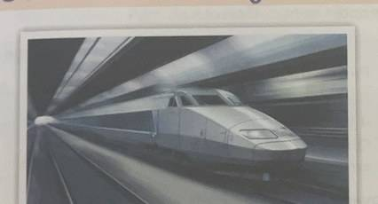
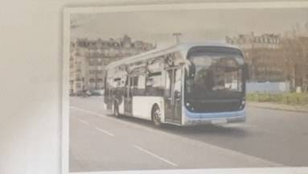
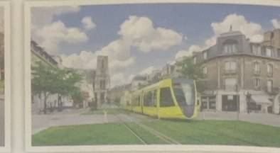
04 / TRAIN COMPARISON
TGV, TER ya Intercités?TGV, TER, or Intercités?Le TGV, le TER ou l’Intercités ?
Train choose karte waqt speed, distance, stops, price aur journey time compare karo.
When choosing a train, compare its speed, distance, stops, price, and journey time.
Pour choisir un train, compare la vitesse, la distance, les arrêts, le prix et la durée du voyage.
| Train | Speed | Distance & stops | Price & time |
|---|---|---|---|
| TGV | Bahut tezVery fast | Lambi distance; kam stopsLong distance; few stops | Mehengi; safar chhotaMore expensive; shorter trip |
| TER | TezFast | Chhoti aur medium distance; zyada stopsShort and medium distances; many stops | Kam kharch; safar lambaCheaper; longer trip |
| Intercités | Medium speedMedium speed | Medium distance; kuch stopsMedium distance; some stops | Medium price; medium timeMedium price; medium journey |
French to writeLe TGV est très rapide. Il parcourt de longues distances et fait peu d’arrêts. Il est plus cher, mais le trajet est plus court. Le TER parcourt des distances courtes ou moyennes, fait beaucoup d’arrêts et coûte moins cher. Le train Intercités a une vitesse moyenne et fait quelques arrêts.
Textbook example: Paris to Nice
Chapter mein diye gaye sample prices aur times neeche hain. Ticket price aur schedule badal sakte hain, isliye ye fixed promise nahi hain.
These are the sample prices and times from the chapter. Ticket prices and schedules can change, so these figures are not guaranteed.
Voici les exemples de prix et de durée du chapitre. Les prix des billets et les horaires peuvent changer.
| Train | Sample starting price | Journey time |
|---|---|---|
| TGV | From €80 (variable) | About 5 h 30 min |
| TER | From €35 (variable) | About 11 h |
| Intercités | From €45 (variable) | About 8 h |
French to writePour Paris–Nice, le TGV coûte à partir de 80 euros et dure environ cinq heures et demie. Les prix peuvent varier.
Yaad rakhne ka shortcut: TGV = Tez aur lambi journey. TER = Region ke andar, zyada stops. Intercités = Beech ka option.
Memory shortcut: TGV = fast and long-distance. TER = regional, with more stops. Intercités = the middle option.
Pour retenir : TGV = rapide et longue distance. TER = régional, avec beaucoup d’arrêts. Intercités = vitesse moyenne.
05 / FRENCH SENTENCE BUILDER
Batao ki shehar kis baat ke liye jaana jaata haiSay what a city is known forDécrire une spécialité de la ville
Chapter mein ek useful phrase baar-baar aata hai: est connue pour ka matlab hai “is baat ke liye jaana jaata hai.”
A useful phrase appears several times in the chapter: est connue pour means “is known for.”
Utilise est connue pour ou est célèbre pour pour présenter une spécialité.
[Ville] est connue pour [spécialité].
Toulouse est connue pour ses bâtiments en briques.
Nice est connue pour ses belles plages.
Ville French mein feminine word hai. Isliye city ke liye elle est connue (she is known) aur elle est située (it is located) likhte hain.
Ville (“city”) is feminine in French. That is why the chapter uses elle est connue (it is known) and elle est située (it is located).
Ville est un mot féminin. On écrit donc elle est connue et elle est située.
Matlab: Toulouse apni eenton se bani buildings ke liye jaani jaati hai. Nice apne sundar beaches ke liye jaani jaati hai.
That means: Toulouse is known for its brick buildings. Nice is known for its beautiful beaches.
est célèbre pour ka matlab bhi “is baat ke liye famous hai” hota hai.
est célèbre pour also means “is famous for.”
06 / WRITE IT IN FRENCH
Paper mein French answer kaise likheinHow to write a French exam answerÉcrire une réponse en français
Answer ko 2–3 chhote French sentences mein banao: pehle city/location, phir uski famous baat. Neeche French model hai—pehle meaning samjho, phir French sentence yaad karke likhne ki practice karo.
Build an answer with two or three short French sentences: give the city or location first, then say what it is known for. Read the meaning, then practise writing the French model from memory.
Écris deux ou trois phrases courtes : indique d’abord la ville et sa situation, puis décris ce qui la rend célèbre. Lis le sens, puis entraîne-toi à écrire la réponse en français.
Décris Toulouse. Toulouse se trouve dans le sud-ouest de la France. Elle est appelée la Ville Rose à cause de ses bâtiments en briques.
Toulouse France ke south-west mein hai. Eenton se bani buildings ki wajah se ise Pink City kehte hain.
Toulouse is in south-west France. It is called the Pink City because of its brick buildings.
Quels sont les moyens de transport en France ? En France, on peut prendre le train, le métro, le bus, le tramway, le taxi, la voiture ou le vélo.
France mein train, metro, bus, tram, taxi, car aur bicycle use kar sakte hain.
In France, people can take a train, metro, bus, tram, taxi, car, or bicycle.
Comment obtenir de meilleurs prix pour les billets ? Il est recommandé de réserver les billets à l’avance.
Achhe ticket prices ke liye tickets pehle se book karne ki salah di jaati hai.
It is recommended to book tickets in advance to try to get better prices.
Connectors: et = aurand; mais = lekinbut; à cause de = ki wajah sebecause of.
Try it: write two sentences about Nice / Nice ke baare mein French mein likho
Nice est une ville située sur la Côte d’Azur. Elle est célèbre pour ses belles plages.
Nice Côte d’Azur par ek shehar hai. Yeh apne sundar beaches ke liye famous hai.
Nice is a city on the French Riviera. It is famous for its beautiful beaches.
07 / PRACTICE & CHECK
Pehle khud try karo, phir check karoTry first. Check after.Essaie d’abord, puis vérifie
Answers dekhne se pehle questions khud solve karo. French city ya transport ka clue dhoondo.
Try the questions yourself before opening the answers. Look for a clue about a French city or type of transport.
Réponds aux questions avant d’ouvrir les réponses. Cherche un indice sur une ville ou un moyen de transport.
- Quelle ville ?
- Kaunsa shehar?Which city?
- Quel moyen de transport ?
- Kaunsa transport?Which means of transport?
- Où ?
- Kahan?Where?
- Quels sont… ?
- Kaun se hain…?What are…?
- Quel est… ?
- Kaunsa hai…?What is…?
- Qu’est-ce que… ?
- Kya…?What…?
- Comment ?
- Kaise?How?
- Combien de temps ?
- Kitni der?How long?
- Que faut-il faire ?
- Kya karna chahiye?What should you do?
- Vrai ou faux ?
- Sach ya jhooth?True or false?
- Choisissez
- Sahi jawab chunoChoose
- Complétez
- Khali jagah bharoComplete / fill in
- Reliez
- Jodo / match karoMatch
- Répondez
- Jawab doAnswer
- Il est recommandé de…
- Yeh karne ki salah di jaati hai…It is recommended to…
A. Vrai ou faux? / True or false?
- Paris est la capitale de l’Espagne.
- Marseille est la plus grande ville de France.
- La Tour Eiffel est un monument célèbre à Paris.
- Lyon est surtout connue pour son industrie aérospatiale.
- Les RER relient les villes et les régions du pays.
- Les tramways sont modernes et efficaces dans plusieurs villes françaises.
- Nice est une destination populaire sur la Côte d’Azur pour ses belles plages.
- Toulouse est appelée « la Ville Rose » à cause de ses bâtiments en pierre.
- Bordeaux est connue pour ses vins délicieux et ses beaux bâtiments anciens.
- Le Vieux-Port de Marseille est célèbre pour ses artistes de rue et ses restaurants de fruits de mer.
Check answers / Jawab dekho
F, F, V, F, F, V, V, F, V, V. Yaad rakho: capital France ki Paris hai; Marseille second-largest hai; aerospace Toulouse se juda hai; RER Paris ke suburbs mein chalta hai; Toulouse ki buildings bricks ki hain.
False, False, True, False, False, True, True, False, True, True. Remember: Paris is the capital of France; Marseille is second-largest; aerospace is linked with Toulouse; the RER serves Paris and its suburbs; Toulouse is known for brick buildings.
B. Choisissez la bonne réponse / Choose the right answer
- Quelle ville est célèbre pour ses bâtiments en briques ?
- Bordeaux
- Lyon
- Nice
- Toulouse
- Quelle ville est située dans le nord-est de la France ?
- Lille
- Marseille
- Nice
- Strasbourg
- Quelle ville est connue pour ses vins délicieux ?
- Bordeaux
- Marseille
- Nice
- Toulouse
- Quel moyen de transport est souterrain ?
- Le métro
- Les bus
- Les taxis
- Les tramways
- Quel train relie les banlieues de Paris ?
- Intercités
- Le RER
- Le TER
- Le TGV
- Quel train est le plus rapide et a peu d’arrêts ?
- Intercités
- Le RER
- Le TER
- Le TGV
Check answers / Jawab dekho
1-D Toulouse, 2-D Strasbourg, 3-A Bordeaux, 4-A métro, 5-B RER, 6-D TGV.
1-D Toulouse, 2-D Strasbourg, 3-A Bordeaux, 4-A metro, 5-B RER, 6-D TGV.
C. Complétez / Fill in the blanks
- Toulouse est aussi appelée la ________.
- Les ________ relient les villes et les régions du pays.
- Les ________ sont modernes et efficaces dans plusieurs villes.
- Les ________ sont chers mais disponibles dans les grandes villes.
- Les ________ sont populaires, surtout dans les villes avec des pistes ________.
Check answers / Jawab dekho
1. Ville Rose, 2. trains, 3. tramways, 4. taxis, 5. vélos; cyclables.
1. Ville Rose, 2. trains, 3. trams, 4. taxis, 5. bicycles; cycle paths.
D. Reliez / Match the city
Har description ke saath sahi city jodo.
Match each description with the correct city.
- La deuxième ville la plus grande de France
- La ville appelée « la Ville Rose »
- La ville située dans le nord-est
- La destination de vacances sur la Côte d’Azur
- Une ville située dans le sud-ouest et connue pour ses vins
Choices: a. Nice b. Bordeaux c. Strasbourg d. Marseille e. Toulouse
Check answers / Jawab dekho
1-d Marseille, 2-e Toulouse, 3-c Strasbourg, 4-a Nice, 5-b Bordeaux.
1-d Marseille, 2-e Toulouse, 3-c Strasbourg, 4-a Nice, 5-b Bordeaux.
E. Apne words mein jawab doAnswer in your own words
- Qu’est-ce que les RER et où sont-ils utilisés ?
- Quels sont les types de trains que l’on trouve en France ?
- Quel est le moyen de transport très utilisé dans les grandes villes françaises ?
- Que faut-il faire pour essayer d’obtenir les meilleurs prix des billets ?
See sample answers / Example dekho
- Les RER relient les banlieues de Paris aux quartiers d’affaires et aux sites touristiques.
RER trains Paris ke suburbs ko business areas aur tourist places se jodti hain. - On peut prendre le TGV, le TER et le train Intercités.
France mein TGV, TER aur Intercités trains hain. - Le métro est très utilisé dans les grandes villes françaises.
French bade shehron mein metro bahut use hoti hai. - Il est recommandé de réserver les billets à l’avance.
Tickets pehle se book karne ki salah hai. Prices phir bhi badal sakte hain.
- Les RER relient les banlieues de Paris aux quartiers d’affaires et aux sites touristiques.
The RER connects Paris suburbs to business districts and tourist sites. - On peut prendre le TGV, le TER et le train Intercités.
France has TGV, TER, and Intercités trains. - Le métro est très utilisé dans les grandes villes françaises.
The metro is widely used in large French cities. - Il est recommandé de réserver les billets à l’avance.
Tickets should be booked in advance. Prices can still change.
SPEAK / WRITE
Chhoti si trip plan karoPlan a short tripPrépare un petit voyage
Apne friend ko France ke trip ka plan batao: kaun si cities dekhoge, kaunsa transport loge, aur kitne din rahoge. Phir apne desh ki chaar pasandida cities ke baare mein likho.
Tell a friend about a trip to France: which cities you want to visit, which transport you will use, and how many days you will stay. Then write about four cities you like in your own country.
Présente un voyage en France : les villes à visiter, les transports à utiliser et le nombre de jours. Puis décris quatre villes de ton pays.
- Je veux visiter… — Main ... ghoomna chahta/chahti hoon.I want to visit…
- Je vais prendre le train. — Main train loonga/loongi.I am going to take the train.
- Je vais rester cinq jours. — Main paanch din rahoonga/rahoongi.I am going to stay for five days.
Je veux visiter Paris et Nice. Je vais prendre le TGV. Je vais rester cinq jours.
Main Paris aur Nice ghoomna chahta/chahti hoon. Main TGV loonga/loongi. Main paanch din rahoonga/rahoongi.
I want to visit Paris and Nice. I will take the TGV. I will stay for five days.
Dans mon pays, j’aime [nom de la ville]. Cette ville est connue pour [lieu ou activité].
Apne desh mein mujhe [city ka naam] pasand hai. Yeh city [jagah ya activity] ke liye famous hai.
In my country, I like [city name]. This city is known for [place or activity].
Listening practice: Book mein ek listening conversation ke questions hain, lekin yahan audio ya conversation text nahi diya gaya. Isliye is activity ke liye teacher/parent se audio lo, ya partner ke saath French trip ka dialogue bolo.
Listening practice: The chapter includes questions about a listening conversation, but no audio or transcript was supplied. Ask a teacher or parent for the recording, or practise a French travel dialogue with a partner.
QUICK REVISION
In clues ko yaad rakhoRemember these cluesRetiens ces indices
- Paris
- Capital; Eiffel Tower; Louvre.Capital; Eiffel Tower; the Louvre.
- Marseille
- Second-largest; Vieux-Port.Second-largest; Vieux-Port.
- Lyon
- Food, architecture, history.Food, architecture, and history.
- Toulouse
- Pink City; bricks; aerospace.Pink City; bricks; aerospace.
- Nice
- Côte d’Azur; beaches.French Riviera; beaches.
- Strasbourg
- North-east; Christmas markets.North-east; Christmas markets.
- Bordeaux
- South-west; wines.South-west; wines.
- Lille
- North; Flemish architecture.North; Flemish architecture.
- TGV / TER
- TGV tez aur lambi distance; TER regional routes par zyada stops leta hai.TGV is fast and long-distance; TER makes more stops on regional routes.